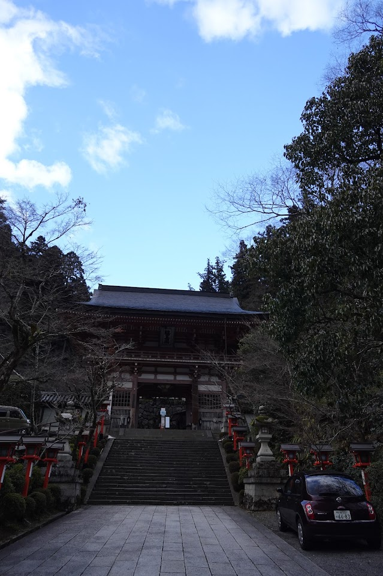

1 源氏、北山を歩き、寺にいる女共の様子を伺う
春の野のうらわか草に親しみていとおほどかに恋もなりぬる（晶子）
源氏は瘧病1にかかっていた。いろいろとまじないもし、僧の加持も受けていたが効験がなくて、この病の特徴で発作的にたびたび起こってくるのをある人が、
 鞍馬寺（北山？） 病み人が行くには山がちすぎるように思う。
「北山2の某という寺に非常に上手な修験僧がおります、去年の夏この病気がはやりました時など、まじないも効果がなく困っていた人がずいぶん救われました。病気をこじらせますと癒りにくくなりますから、早くためしてごらんになったらいいでしょう」
こんなことを言って勧めたので、源氏はその山から修験者を自邸へ招こうとした。
「老体になっておりまして、岩窟を一歩出ることもむずかしいのですから」
僧の返辞はこんなだった。
「それではしかたがない、そっと微行で行ってみよう」
こう言っていた源氏は、親しい家司四、五人だけを伴って、夜明けに京を立って出かけたのである。郊外のやや遠い山である。これは三月の三十日だった。京の桜はもう散っていたが、途中の花はまだ盛りで、山路を進んで行くにしたがって渓々をこめた霞にも都の霞にない美があった。窮屈な境遇の源氏はこうした山歩きの経験がなくて、何事も皆珍しくおもしろく思われた。修験僧の寺は身にしむような清さがあって、高い峰を負った巌窟の中に聖人ははいっていた。
源氏は自身のだれであるかを言わず、服装をはじめ思い切って簡単にして来ているのであるが、迎えた僧は言った。
「あ、もったいない、先日お召しになりました方様でいらっしゃいましょう。もう私はこの世界のことは考えないものですから、修験の術も忘れておりますのに、どうしてまあわざわざおいでくだすったのでしょう」
驚きながらも笑を含んで源氏を見ていた。非常に偉い僧なのである。源氏を形どった物を作って、瘧病をそれに移す祈祷をした。加持などをしている時分にはもう日が高く上っていた。
源氏はその寺を出て少しの散歩を試みた。その辺をながめると、ここは高い所であったから、そこここに構えられた多くの僧坊が見渡されるのである。螺旋状になった路のついたこの峰のすぐ下に、それもほかの僧坊と同じ小柴垣ではあるが、目だってきれいに廻らされていて、よい座敷風の建物と廊とが優美に組み立てられ、庭の作りようなどもきわめて凝った一構えがあった。
「あれはだれの住んでいる所なのかね」
と源氏が問うた。
「これが、某僧都がもう二年ほど引きこもっておられる坊でございます」
「そうか、あのりっぱな僧都、あの人の家なんだね。あの人に知れてはきまりが悪いね、こんな体裁で来ていて」
などと、源氏は言った。美しい侍童などがたくさん庭へ出て来て仏の閼伽棚3に水を盛ったり花を供えたりしているのもよく見えた。
「あすこの家に女がおりますよ。あの僧都がよもや隠し妻を置いてはいらっしゃらないでしょうが、いったい何者でしょう」
こんなことを従者が言った。崖を少しおりて行ってのぞく人もある。美しい女の子や若い女房やら召使の童女やらが見えると言った。
源氏は寺へ帰って仏前の勤めをしながら昼になるともう発作が起こるころであるがと不安だった。
「気をお紛らしになって、病気のことをお思いにならないのがいちばんよろしゅうございますよ」
などと人が言うので、後ろのほうの山へ出て今度は京のほうをながめた。ずっと遠くまで霞んでいて、山の近い木立ちなどは淡く煙って見えた。
「絵によく似ている。こんな所に住めば人間の穢い感情などは起こしようがないだろう」
と源氏が言うと、
「この山などはまだ浅いものでございます。地方の海岸の風景や山の景色をお目にかけましたら、その自然からお得になるところがあって、絵がずいぶん御上達なさいますでしょうと思います。富士、それから何々山」
こんな話をする者があった。また西のほうの国々のすぐれた風景を言って、浦々の名をたくさん並べ立てる者もあったりして、だれも皆病への関心から源氏を放そうと努めているのである。
明石の浦、のそばの明石海峡大橋。舞子公園あたりから撮ったもの。実際の明石の浦はもっと西。
「近い所では播磨の明石の浦4がよろしゅうございます。特別に変わったよさはありませんが、ただそこから海のほうをながめた景色はどこよりもよく纏っております。前播磨守入道が大事な娘5を住ませてある家はたいしたものでございます。二代ほど前は大臣だった家筋で、もっと出世すべきはずの人なんですが、変わり者で仲間の交際なんかをもきらって近衛の中将6を捨てて自分から願って出てなった播磨守なんですが、国の者に反抗されたりして、こんな不名誉なことになっては京へ帰れないと言って、その時に入道した人ですが、坊様になったのなら坊様らしく、深い山のほうへでも行って住めばよさそうなものですが、名所の明石の浦7などに邸宅を構えております。播磨にはずいぶん坊様に似合った山なんかが多いのですがね、変わり者をてらってそうするかというとそれにも訳はあるのです。若い妻子が寂しがるだろうという思いやりなのです。そんな意味でずいぶん贅沢に住居なども作ってございます。先日父の所へまいりました節、どんなふうにしているかも見たいので寄ってみました。京にいますうちは不遇なようでしたが、今の住居などはすばらしいもので、何といっても地方長官をしていますうちに財産ができていた8のですから、生涯の生活に事を欠かない準備は十分にしておいて、そして一方では仏弟子として感心に修行も積んでいるようです。あの人だけは入道してから真価が現われた人のように見受けます」
「その娘というのはどんな娘」
「まず無難な人らしゅうございます。あのあとの代々の長官が特に敬意を表して求婚するのですが、入道は決して承知いたしません。自分の一生は不遇だったのだから、娘の未来だけはこうありたいという理想を持っている。自分が死んで実現が困難になり、自分の希望しない結婚でもしなければならなくなった時には、海へ身を投げてしまえと遺言をしているそうです」
源氏はこの話の播磨の海べの変わり者の入道の娘がおもしろく思えた。
「竜宮の王様のお后になるんだね。自尊心の強いったらないね。困り者だ」
などと冷評する者があって人々は笑っていた。話をした良清9は現在の播磨守の息子で、さきには六位の蔵人をしていたが、位が一階上がって役から離れた男である。ほかの者は、
「好色な男なのだから、その入道の遺言を破りうる自信を持っているのだろう。それでよく訪問に行ったりするのだよ」
とも言っていた。
「でもどうかね、どんなに美しい娘だといわれていても、やはり田舎者らしかろうよ。小さい時からそんな所に育つし、頑固な親に教育されているのだから」
こんなことも言う。
「しかし母親はりっぱなのだろう。若い女房や童女など、京のよい家にいた人などを何かの縁故からたくさん呼んだりして、たいそうなことを娘のためにしているらしいから、それでただの田舎娘ができ上がったら満足していられないわけだから、私などは娘も相当な価値のある女だろうと思うね」
だれかが言う。源氏は、
「なぜお后にしなければならないのだろうね。それでなければ自殺させるという凝り固まりでは、ほかから見てもよい気持ちはしないだろうと思う」
などと言いながらも、好奇心が動かないようでもなさそうである。平凡でないことに興味を持つ性質を知っている家司たちは源氏の心持ちをそう観察していた。
「もう暮れに近うなっておりますが、今日は御病気が起こらないで済むのでございましょう。もう京へお帰りになりましたら」
と従者は言ったが、寺では聖人が、
「もう一晩静かに私に加持をおさせになってからお帰りになるのがよろしゅうございます」
と言った。だれも皆この説に賛成した。源氏も旅で寝ることははじめてなのでうれしくて、
「では帰りは明日に延ばそう」
こう言っていた。
わらわやみ。熱病のこと。熱帯ではマラリアを指す。↩︎
京都府左京区の大雲寺や鞍馬寺とする説がある、と大雲寺のWikipediaに記載。↩︎
源氏は須磨（第12帖）で朧月夜との情事が発覚して須磨に逃げ、そばの明石にいる明石の入道とその娘の噂を聞く（明石、第13帖）。その噂をここで聞いていることになる。↩︎
明石の入道とその娘の明石の君のこと。前者は桐壺の更衣（源氏の母）のいとこで元高官。後者は源氏と縁を持ち、明石の中宮を生む。↩︎
近衛府の中将。従四位下。源氏の友人で左大臣の子である頭中将は近衛の中将と蔵人頭を兼ねたものを指す言葉。↩︎
現在の明石市役所のある辺りのことをこう呼ぶらしい。紫式部が須磨や明石に行ったかどうかは疑わしいが、式部の父（藤原為時）は播磨権少掾であったらしい。播磨に任官したわけではないようだが、噂ぐらいは聞いたのかもしれない。↩︎
上位の公達は比較的簡単に地方長官になれたらしく、歌聖：藤原定家は自分の出自の低さによる不遇を恨んだといった内容が熊野御幸の本に書かれています。↩︎
源氏の腹心の部下の一人。Wikipediaに記事がある。↩︎
{kind=link}